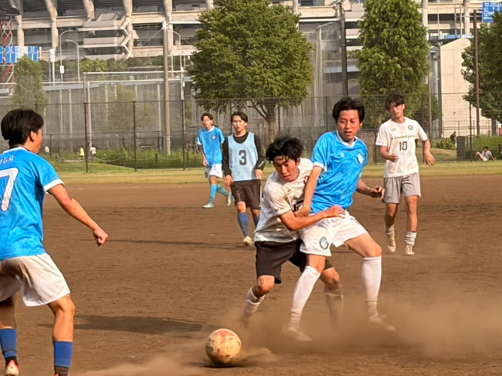
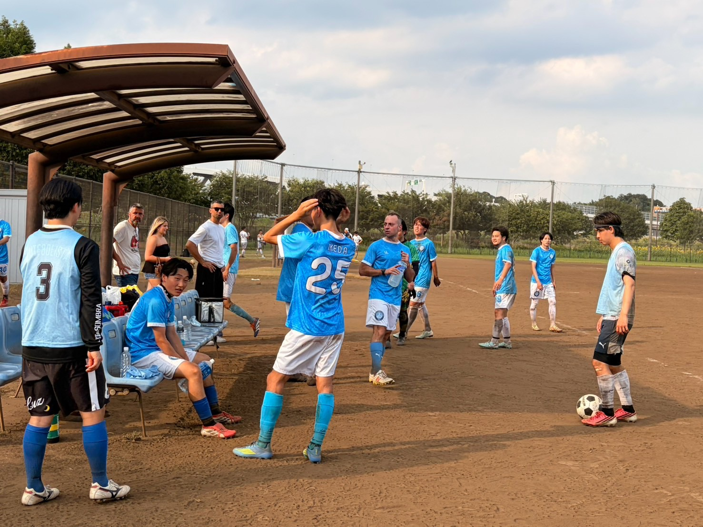
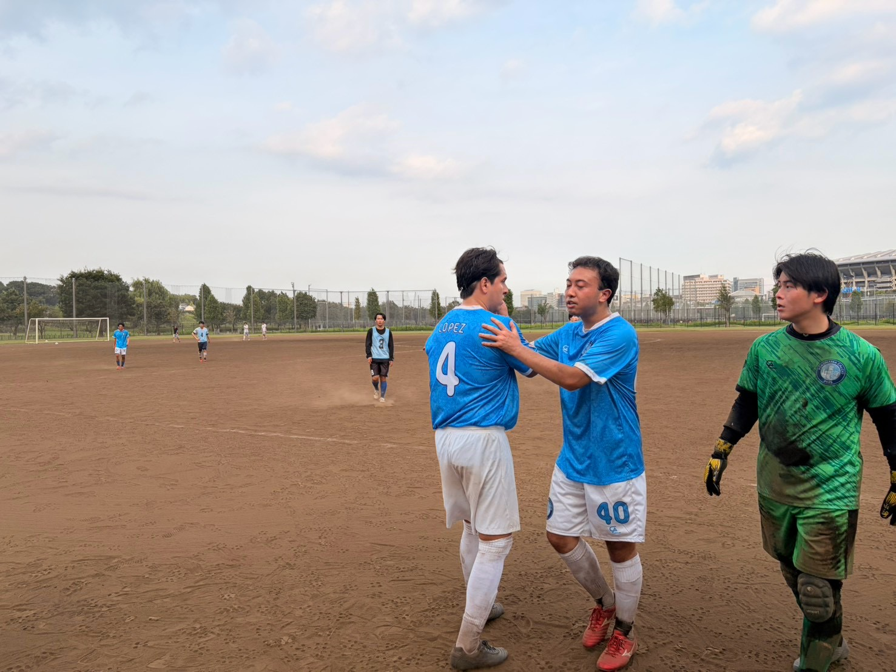
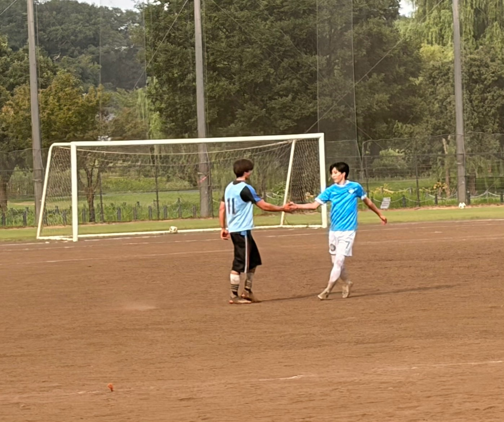
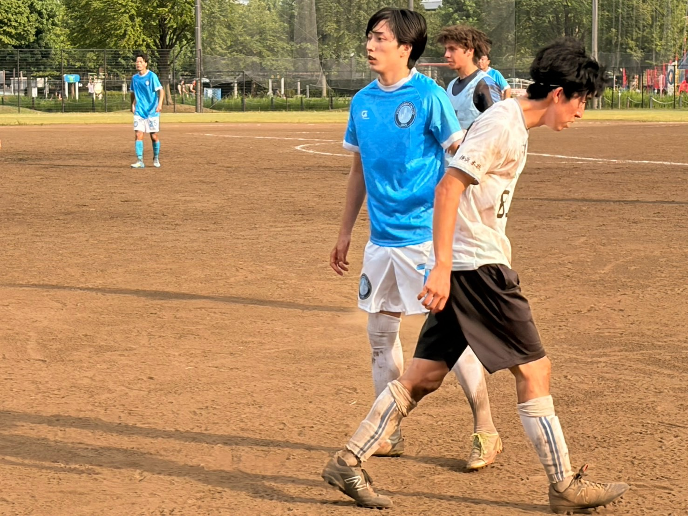

Yokohama Calcio（ヨコハマ・カルチョ）は、2025年に横浜で設立された社会人アマチュアサッカークラブです。イタリアサッカーの組織的な戦術アプローチからインスピレーションを受け、一人ひとりが役割を理解し連動するチームを目指しています。
「個人の成長、チームの進化」を理念に掲げ、年齢やバックグラウンドを超えた仲間が集まり、真剣にフットボールと向き合っています。
練習カレンダーから希望日を1〜3つ選び、フォームから申し込みます。
入部前に3回の体験参加をお願いしています（1回500円）。ブランクがあっても大歓迎です。
月会費2,000円。月2回以上の参加が目安です。18〜40歳の経験者が対象です。





Tシャツ、キャップ、キーホルダー、マフラータオルなどのオリジナルグッズを取り揃えています。売上収益はチームの活動費として大切に活用させていただきます。
公式ショップを見る当クラブでは、グラウンド手配や用具サポート、試合後のサードタイム（懇親会）等でご協力いただける横浜市内の飲食店・企業様・オフィシャルパートナーを募集しています。
パートナーシップについて問い合わせるお気軽にご連絡ください